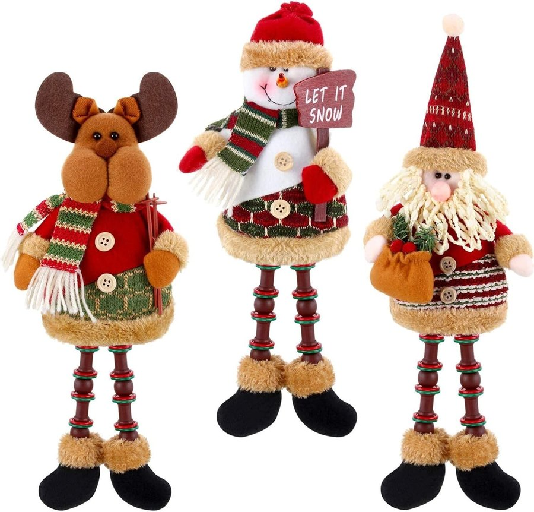

Hasta 20 €
Figuras
Pack de 3
KAHEIGN, 3 figuras de peluche (Papá Noel, reno y muñeco de nieve)
Un pack de tres figuras sentadas —Papá Noel, un ciervo y un muñeco de nieve—, de unos 33 × 14 cm cada una. La ficha indica franela y lana, y que la base lleva arena para que se sostengan en una superficie plana, como una mesa o una chimenea. Son para interior. Lo vende KAHEIGN-EU, con envíos de Amazon, y la entrega anunciada es el jueves 19 de noviembre (hay una opción más rápida para el 16). Valoraciones: 4,2 sobre 5, a partir de 446 opiniones.
19,99 €Amazon.es · vendido por KAHEIGN-EU y enviado por Amazon · entrega anunciada el jueves 19 de noviembre · en stock
3 figuras, unos 33 × 14 cm, franela y lana, base con arena, uso interior.